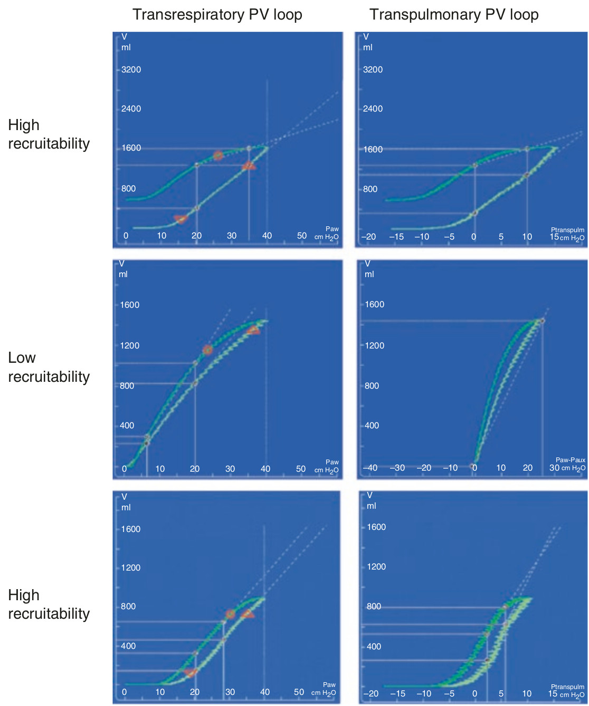

در موارد تیپیک استعداد کم یا زیاد برای بازگشائی اندکس های لوپ مانند تغییر در شیب دمی، کمپلیانس خطی، و هیستره زیس در لوپ فشار-حجم سیستم تنفسی (راه هوائی) و ترانس پولموناری مشابه هستند. در پاره ای از موارد لوپ فشار-حجم سیستم تنفسی کمکی به تعیین استعداد بازگشائی نمی کند. مانند مواردی که تغییری در شیب دمی لوپ روی نمی دهد و یا کمپلیانس خطی بالا نیست. در این موارد لوپ فشار-حجم ترانس پولموناری دقیق تر عمل می کند و ممکن است بتواند استعداد بازگشائی را با تغییر در شیب شاخه دمی و یا کمپلیانس خطی بالاتر تعیین نماید.

لوپ فشار-حجم تنفسی و ترانس پولموناری:
۱ - شکل دقیقا مشابهی دارند
۲ - تغییرات شیب مشابهی نشان میدهند
۳ - کمپلیانس خطی مشابهی نشان میدهند
۴ - توسط دو مانور پشت سر هم بدست می آید
۵ - ممکن است اشکال متفاوتی داشته باشند